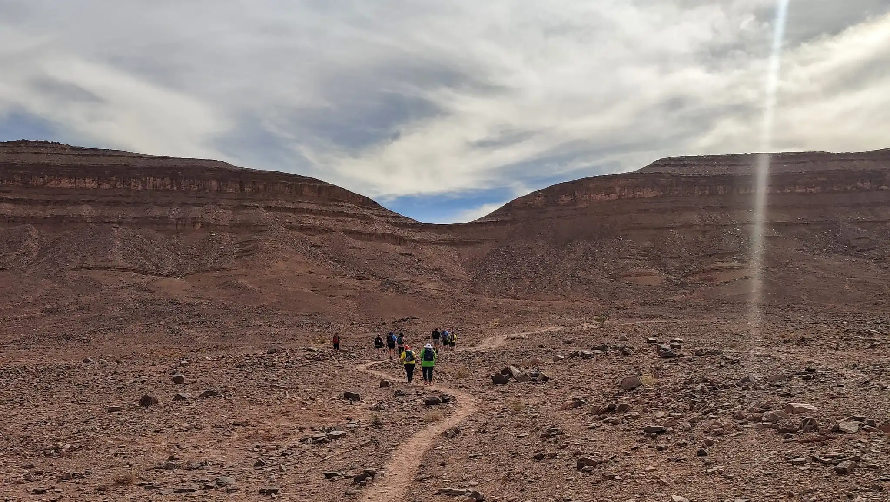
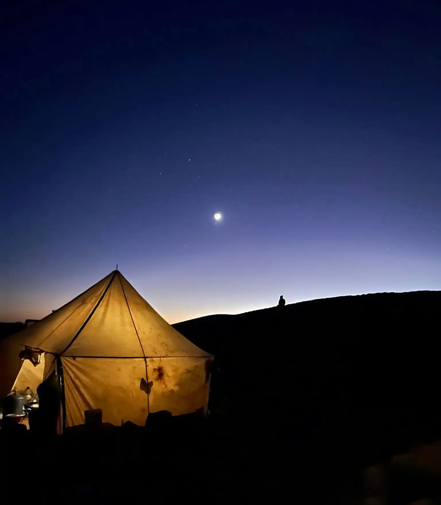
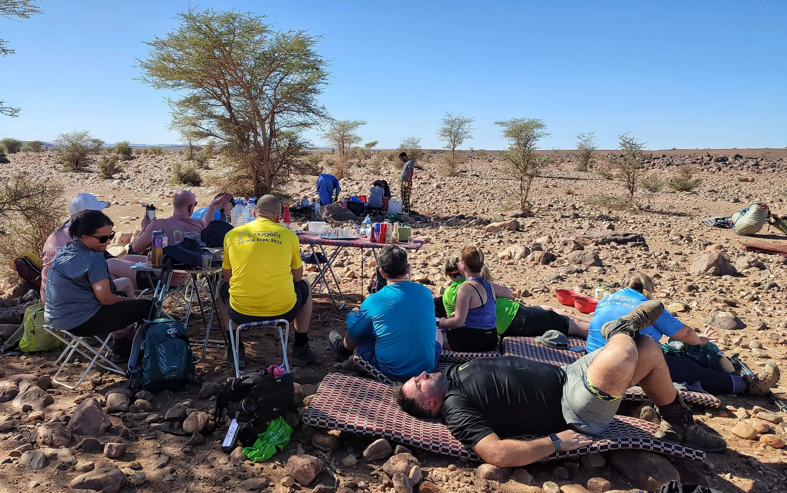
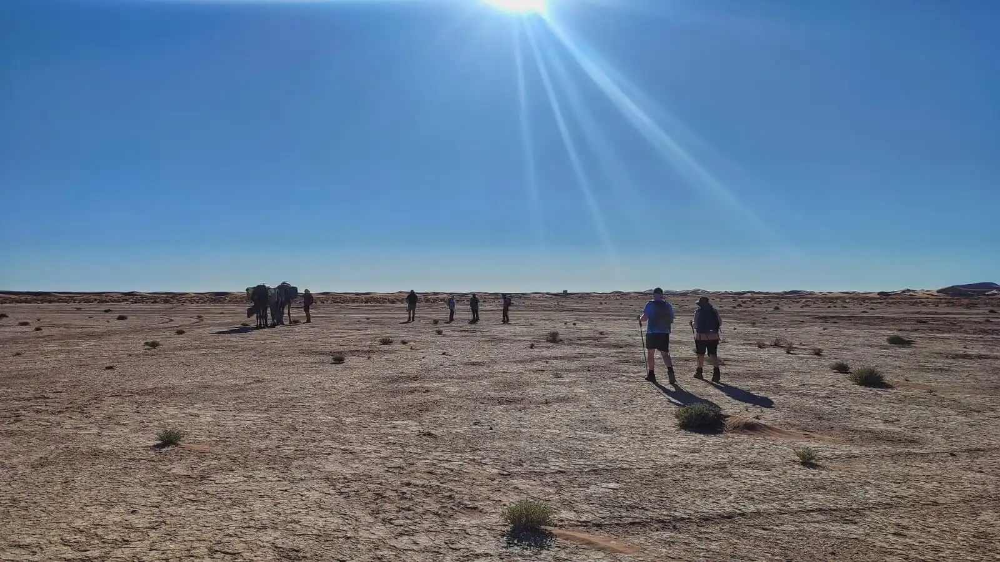
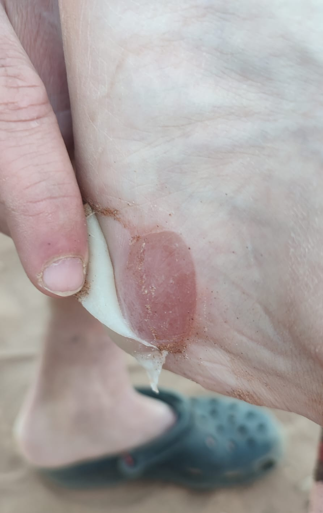
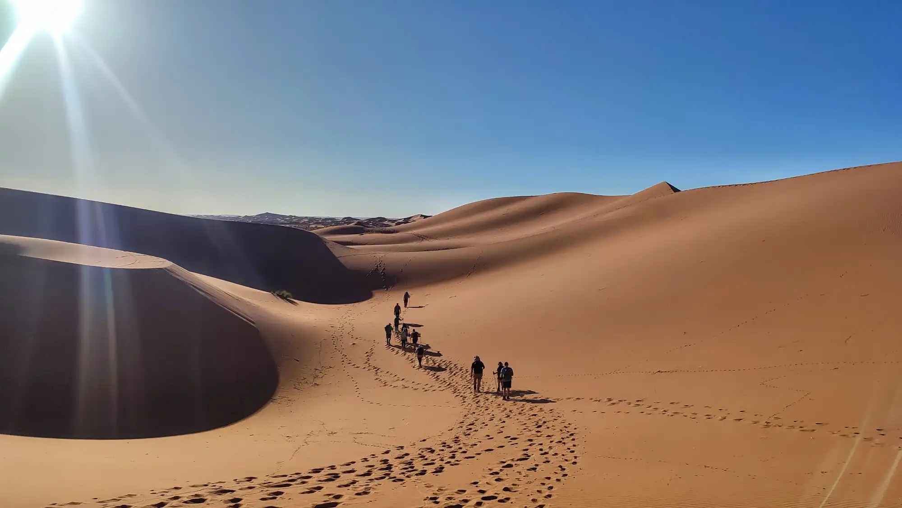
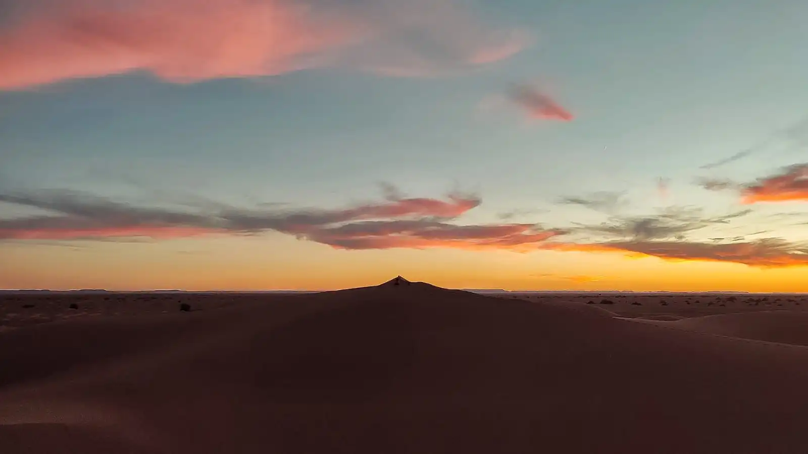
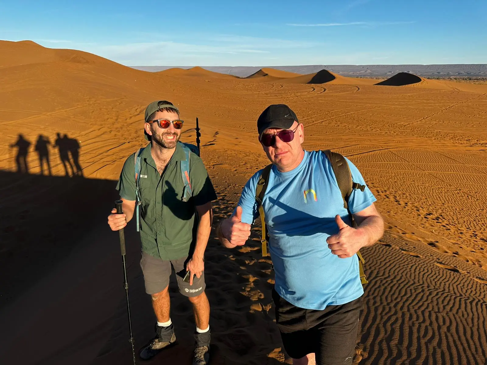

100km Across the Sahara
I was employed by a UK company to lead a group of 14 adults during a 100km trek across the Sahara Desert.
I was working with another guide, Jonny, who had led the trek before. The hikers were a charity fundraising group from the UK, and had raised over £50,000 for a charity that they worked for or were connected with.
Jonny and I met the group at Stansted Airport, and despite the 6am flight they were full of beans, cheering and singing on the plane. From Marrakech it was a 3 hour bus journey south to Ouarzazate, where we stayed in a hotel. Another 4 hours on the bus in the morning, and we reached the edge of the desert where the in-country team of guides and gear were waiting.
Our team consisted of Jonny and I, the group of 14 hikers, Ibrahim and Omar who were the Moroccan guides, 2 chefs, 2 porters, and 2 cameleers, who were responsible for the 6 camels. The group would be camping in the desert, and each morning the camp would be packed down and transported in 4x4’s to the next site. The camels would follow the hikers, carrying extra water and being available in case one of the team could no longer walk.
The first afternoon’s hike was 14km, and included 275m of elevation, over a hill which was close to our lunch spot. The hill would be the most significant climb of the whole trek, and some of the group were anxious about their fitness.
One of the group had caught a stomach bug in Ouarzazete, and it was agreed that they would take a 4x4 to camp and rest ahead of the long second day of hiking. The group set off, jubilantly, and soon we began zig-zagging up the ridge.
As we began climbing one of the group struggled with their breathing, and told me that they would not be able to do the hike. I tried to encourage them; we were 20 minutes into a 5 day journey, but they were adamant. They climbed onto a camel, which refused to walk with its new cargo. Undeterred, the guest christened the camel ‘Bob’, and was making jokes about how they were reducing Bob’s life expectancy as they plodded onwards.
As we continued uphill another two of the group dropped out, and within the first hour we had 3 of the team on camels. No one had used a camel during the previous 5 day trek that Jonny had led in the Sahara. I think that the group using camels so early in the trip set a precedent and gave the team an ‘out’, which psychologically wasn’t helpful so early on.
Some of the behaviours that I’ll nudge young people away from on expeditions were being repeated with the group, such as hiking with empty water bottles, not wearing sunscreen and a wide brimmed hat, and using their drinking water as a shower to cool themselves down. We were trying to promote good habits but sometimes it can be hard to get messages across early on in a journey when trust hasn’t yet been established.
At the end of the first day, 4 of the hikers were on camels, and managing the group and keeping everyone together, and moving, was a challenge. The pace of the group was slow and we arrived at camp just before dark. The group settled in their tents and later we sat down to a dinner of chicken tagine. Jonny called our contact from the UK company via a satellite phone to explain we have had some issues with group fitness. Day 2 would be the most strenuous of the whole trip, and it was agreed that the hikers that had been on camels would take a 4x4 to the lunch site tomorrow, where they could then decide whether they’d like to rejoin the hike. We set breakfast at 6am to give ourselves the best chance of covering the distance.
After a breakfast of pancakes and fresh fruit we set off in darkness. Hiking through a dry river bed, those at the front of the group saw a snake which escaped into some nearby rocks. The sun rose and revealed the land around us, and the temperature increased throughout the morning as we walked across a plateau which offered little opportunities for shade. We hiked 17km to lunch, and the group arrived exhausted and ready for a break.
As we continued, the team struggled with the heat, exhaustion, and blisters, and by 3pm our group of 14 hikers was down to 5, with those that could no longer walk either being placed on camels or being picked up by the 4x4. One of the team was a type 1 diabetic and as she fatigued she was unable to raise her sugar levels, yet we didn’t have a 4x4 immediately available as it was being used to transport the hikers that had already left. The weather was extremely hot, and there were a lot of individual struggles to consider whilst trying to motivate the remaining hikers to complete the day.
The total distance which Jonny and I had told the group during the morning’s briefing was 30km. This was the distance that the UK company had provided in the trip overview. One of the hikers was tracking the distance on a smart watch, and as we reached 30km with no camp in sight, there was a rising sense of outrage amongst the 3 exhausted hikers who made it to the end of the day.
We reached camp at 34.5km, 11 hours of hiking. There was a feeling of unhappiness amongst the team, and a number of comments were made criticising our leadership in providing an incorrect distance. I understood; “just a little but further” is grating when people are exhausted and there’s still an unknown distance to go. The in-country team of Moroccon guides had a number of factors to consider when choosing a camp, including whether other hiking groups were using their established wild camp sites. So distances in the desert can change. This should have been mitigated in the day’s briefing by explaining that we are on an expedition and that distances are guidelines only, and that everyone should be prepared for multiple days of hard trekking. But the group believed the final distance was fixed, and over dinner I apologised to the team, and said that moving forward we would be sure to provide accurate information and manage expectations better for the remainder of the trek.
The groups’ feet were in poor shape, and the next morning saw a number of blisters tended to. Blisters are sterile closed wounds and I wouldn’t usually pop them, however some of the blisters had swollen forming a huge bubble, which made walking extremely uncomfortable.
From this point on the team christened the service “Tom’s Trotters”, and at every rest stop the clinic was open for business. I used antiseptic, zinc tape, and blister plasters to patch up the team’s feet. One hiker had blisters beneath their toenails and felt enormous relief once they were popped and drained. Another team member learnt the hard way that you should never remove a blister plaster as it can tear off the covering layer of skin. This then prevented them from walking for one of days whilst the open wound recovered.
We had reached the dunes, which for many of the group was the landscape that they had imagined when signing up for the trip. The hiking was challenging, steep ups and downs, and loose sand which made the uphills twice as high. We all wore gaiters to stop the sand getting into our boots. The landscape was incredible, sand dunes that towered across the horizon as far as you could see. It was one of the most spectacular places that i’ve hiked, and after a few hard days it was great for the team to be rewarded with incredible views.
By lunchtime we had passed the biggest dunes. The teammates that had stopped hiking fell into support roles for those that were still going, providing plates of food, massages, filling water bottles, sharing snacks and gear, providing good energy and encouragement. Of the 16 hikers that started, 4 set out after lunch on day 3. Conditions were tough; no wind, sun overhead, limited shade, and the hikers seemed exhausted from the multiple days of camping and hiking. We took a break whenever there were small shrub to shelter under, but it was one of those quiet afternoons where everyone is resigned to something that’s unavoidable and uncomfortable.
We arrived into camp that evening having hiked 70km over 3 days. The team were now into a routine at camp, knowing how to sort their gear out, look after themselves and prepare for the following day. That evening there was a beautiful sunset, and I think many of us looked out across the desert and realised how lucky we were to be there.
For the penultimate day in the desert the team hiked 21km, which passed uneventfully. Johnnie and I were less vocal with our encouragement and advice as the trip went on because the team began functioning autonomously, managing themselves in terms of breaks and pace, and slower team members were encouraged to the front of the group to keep them included. In camp that evening Omar and Mohommed baked bread by burying a dough beneath the ashes of the fire. The team had got into a tradition of sharing our best and worst moments over dinner, and there was a feeling of camaraderie and love as we sang songs together into the night.
Our final morning in the desert saw the majority of the team hiking the final 9km, at the end of which cold beers and our transport out of the desert awaited. There were hugs and tears at the finish line. 3 members of the team hiked all 100km, but all of the group contributed in their own way to a collective objective that had raised an enormous amount of money for a great cause.
I loved the experience; the group was hilarious and what they lacked in fitness they made up for in positivity and laughter. I’ve kept in touch with a few members of the team, and they’re planning another fundraising adventure in 2025 which I hope to be part of.
